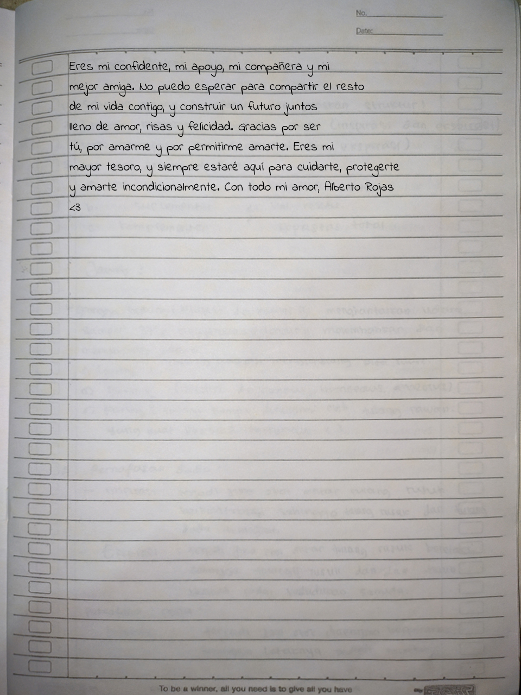
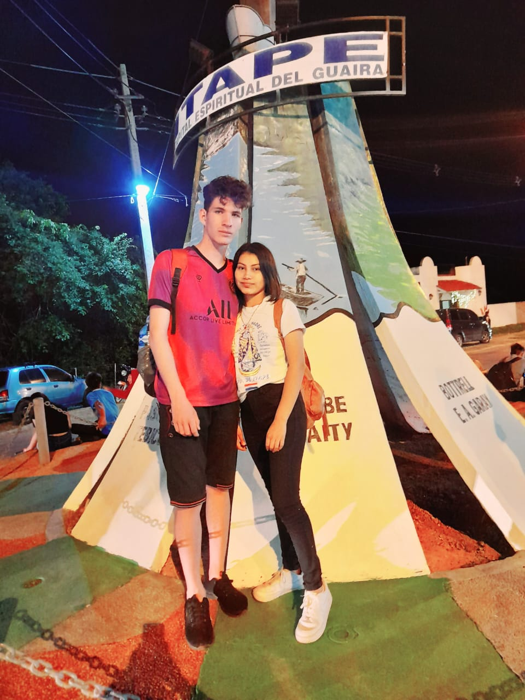

Bienvenida
¡Hola a todos!
Hoy quiero compartirles una emocionante noticia: ¡he decidido comenzar un blog personal donde estaré compartiendo fotos y cartas que he escrito para mi increíble novia! Estoy realmente emocionado de embarcarme en esta nueva aventura y tener la oportunidad de mostrarles un vistazo de nuestra hermosa historia de amor.
Para mí, el acto de escribir cartas es una forma hermosa y significativa de expresar mis sentimientos hacia mi pareja. Me permite transmitirle todo lo que está en mi corazón de una manera íntima y personal. Y ahora, al compartir algunas de estas cartas en mi blog, espero que también puedan captar un poco de la magia y el amor que compartimos juntos.
Además de las cartas, también estaré compartiendo algunas de nuestras fotos más especiales. Estas imágenes capturan momentos inolvidables en nuestra relación, desde nuestras aventuras juntos hasta los simples momentos cotidianos llenos de felicidad. Espero que al ver estas fotos, puedan sentir la alegría y el amor que nos rodea.
Mi objetivo principal al crear este blog es poder transmitir la belleza de nuestra relación y, al mismo tiempo, inspirar a otros a valorar y celebrar el amor en sus propias vidas. Creo firmemente que el amor es uno de los regalos más preciosos que podemos experimentar, y deseo compartir esa felicidad con todos ustedes.
Quiero aprovechar esta oportunidad para agradecer a mi novia por su apoyo inquebrantable y su amor incondicional. Ella es mi musa, mi inspiración y mi compañera en cada paso del camino. Sin ella, este blog no sería posible, y estoy eternamente agradecido por tenerla a mi lado.
Así que los invito a todos a visitar mi blog y unirse a nosotros en este viaje lleno de amor. Estoy seguro de que encontrarán algo especial y significativo en cada carta y en cada foto que comparto. Espero que disfruten explorando nuestra historia tanto como yo disfruto escribiéndola.
¡Gracias a todos por su apoyo y cariño!
Con amor,
Alberto Rojas.
Primera Carta Que Hice:Escrito el: 20/04/2023


Hoy me encuentro aquí, compartiendo contigo la emocionante experiencia de escribir mi primera carta para mi novia. Aunque admito que al principio me sentí un poco nervioso y ansioso por expresar mis sentimientos de manera adecuada, sabía que era importante transmitirle lo mucho que significa para mí.
Me senté en un lugar tranquilo, con una hoja de papel y un bolígrafo en mano. Quería que cada palabra fuera auténtica y reflejara lo que realmente siento por ella. Tomé un momento para reflexionar sobre nuestra relación, recordando los momentos especiales que hemos compartido y cómo ha impactado mi vida de manera positiva.
Luego, comencé a escribir. Las palabras fluían de mi corazón a la punta del bolígrafo. Traté de capturar la esencia de lo que siento por ella, describiendo su impacto en mi vida, la conexión profunda que compartimos y cómo su amor me ha transformado. Quería que supiera lo agradecido que estoy por tenerla a mi lado y cómo estoy comprometido a hacerla feliz.
A medida que avanzaba en la carta, mi confianza crecía. Me sentía emocionado por expresar mis sentimientos y por la oportunidad de compartir mis pensamientos más profundos con ella. Cada palabra escrita se convertía en una promesa de amor y cuidado, en un recordatorio constante de que siempre estaré allí para ella.
Después de terminar la carta, la leí varias veces para asegurarme de que transmitía exactamente lo que quería decir. Hice algunas pequeñas correcciones y ajustes, asegurándome de que cada frase fuera significativa y conmovedora.
Escribir esta primera carta para mi novia fue una experiencia llena de amor, emoción y vulnerabilidad. Me permitió expresar mis sentimientos de una manera que las palabras habladas no siempre pueden capturar por completo. Fue un recordatorio para ambos de la belleza de nuestro amor y de la importancia de expresar nuestras emociones de manera sincera.
Estoy emocionado por todas las cartas que compartiremos en el futuro, porque sé que cada una de ellas será un tesoro lleno de amor y recuerdos. Esta primera carta es solo el comienzo de un viaje
maravilloso y estoy agradecido de poder escribir nuestras historias juntos.
Carta De Despedida Que Hice:Escrito el: 22/04/2023
Recuerdo claramente aquel día en el que me senté frente a mi escritorio, con el corazón lleno de emociones encontradas. Sentía la necesidad de expresar todo lo que llevaba dentro, cada pensamiento y cada sentimiento que me invadían en ese momento. Decidí escribir una carta de despedida para Liz Caballero, mi amada novia, aunque sabía que nunca se la entregaría.
Tomé una pluma y un papel en blanco, y comencé a escribir con cautela. Cada palabra que surgía de mi pluma era una confesión sincera y profunda, una muestra de amor y gratitud hacia Liz. Hablaba de los momentos que compartimos juntos, de las risas, las lágrimas y las experiencias que nos unieron en una conexión tan especial.
En la carta, expresé mi admiración por su fuerza, su belleza y su capacidad para iluminar mi vida. Le recordé lo agradecido que estaba por haberla conocido y por el amor que compartimos. Le confesé mis miedos y mis deseos, mis sueños y mis esperanzas para el futuro.
Mientras escribía, las lágrimas comenzaron a caer por mis mejillas. Sentía un nudo en la garganta, pero seguía adelante, dejando que cada palabra fluyera de mi corazón. La carta se convirtió en una especie de catarsis, una forma de liberar todas las emociones que llevaba dentro, aunque sabía que nunca tendría el coraje de entregarla.
Cuando finalmente terminé la carta, la leí una y otra vez. Cada vez que lo hacía, sentía una mezcla de alivio y tristeza. Por un lado, me sentía aliviado de haber podido expresar todo lo que sentía en mi interior. Por otro lado, la tristeza se apoderaba de mí al pensar en la idea de decirle adiós a Liz, aunque fuera a través de una carta no entregada.
Decidí guardar la carta en un cajón, junto con otros recuerdos y tesoros personales. Sabía que siempre estaría ahí, como un testigo silencioso de lo que sentía en ese momento de mi vida. Aunque nunca se la entregaría a Liz, me reconfortaba saber que había dado voz a mis emociones más profundas y que había sido sincero conmigo mismo.
Con el tiempo, nuestra relación se transformó y tomamos caminos separados. Sin embargo, siempre guardaré en mi corazón los momentos felices que compartimos y el amor que nos unió. La carta de despedida que nunca le entregué se convirtió en un recordatorio de ese amor y una muestra de la valentía que tuve al expresarlo, aunque fuera solo para mí mismo.
Juntos a Itape:Escrito el: 18/12/2022

Hace algunos años, mi novia Liz Caballero y yo decidimos emprender un viaje muy especial hacia Itapé, un pequeño pueblo situado en Paraguay. Nuestro propósito era peregrinar y visitar a la Virgencita de Itapé, una figura religiosa muy venerada en la región.
Desde el momento en que tomamos esa decisión, sentimos una gran emoción y entusiasmo por emprender este viaje espiritual juntos. Nos preparamos con antelación, empacamos nuestras pertenencias y nos aseguramos de tener todo lo necesario para el viaje.
El día de nuestra partida finalmente llegó. Nos levantamos temprano por la mañana pero salimos a las 18:00hs de la tarde.
El viaje hacia Itapé era largo, pero estábamos emocionados y llenos de energía. Durante el trayecto, observamos el paisaje pintoresco de Paraguay, con sus campos verdes y hermosas colinas.
Después de varias horas, finalmente llegamos a Itapé. Nos sorprendió la belleza del pueblo y su ambiente tranquilo. Fuimos recibidos por los lugareños con calidez y amabilidad, lo cual nos hizo sentir aún más bienvenidos.
Nos instalamos en un modesto hospedaje y decidimos visitar la iglesia donde se encontraba la Virgencita de Itapé. Al entrar, nos impresionó la paz y la serenidad que se respiraba en el lugar. Nos unimos a los fieles que ya se encontraban allí, rezando y ofreciendo sus plegarias a la Virgen.
Liz y yo nos acercamos al altar donde se encontraba la imagen de la Virgencita de Itapé. Ambos nos sentimos profundamente conmovidos por su presencia y comenzamos a orar con fervor. Le pedimos su guía y protección, así como bendiciones para nuestras vidas y nuestra relación.
Durante nuestra estancia en Itapé, participamos en las diversas actividades religiosas que se llevaban a cabo en honor a la Virgencita. Asistimos a misas, procesiones y rezamos el rosario junto a los demás peregrinos. Cada momento que pasamos en ese lugar sagrado fortaleció nuestra fe y nuestra unión como pareja.
Además de las actividades religiosas, también exploramos el pueblo y conocimos a otros peregrinos que compartían sus historias y experiencias. Aprendimos mucho de ellos y nos sentimos inspirados por su devoción y gratitud hacia la Virgencita de Itapé.
Después de ese Dia maravillosos en Itapé, llegó el momento de regresar a casa. Nos despedimos con nostalgia del pueblo y de la Virgencita, pero nos llevamos en nuestros corazones la paz y la esperanza que experimentamos durante nuestra peregrinación.
Desde aquel viaje, Liz y yo continuamos fortaleciendo nuestra relación y nuestra fe. Recordamos con cariño nuestro tiempo en Itapé y siempre llevamos presente a la Virgencita de Itapé en nuestras oraciones.
Peregrinar a Itapé y visitar a la Virgencita fue una experiencia que nos unió en lo más profundo de nuestro ser y nos recordó la importancia de la fe y la espiritualidad en nuestras vidas. Siempre estaremos agradecidos.